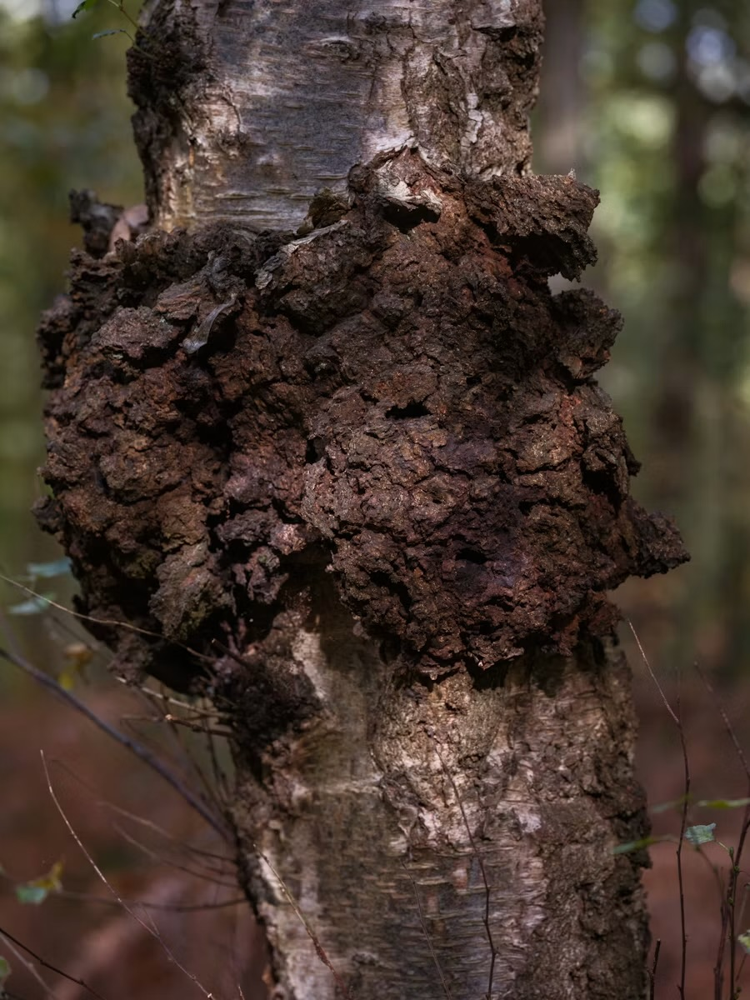
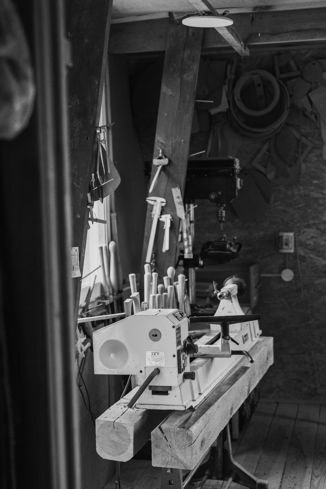
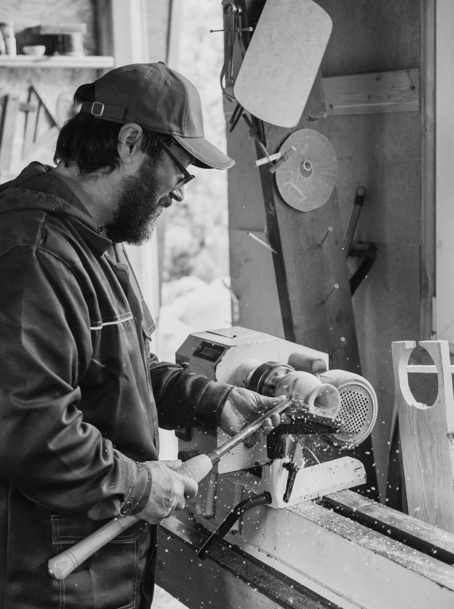
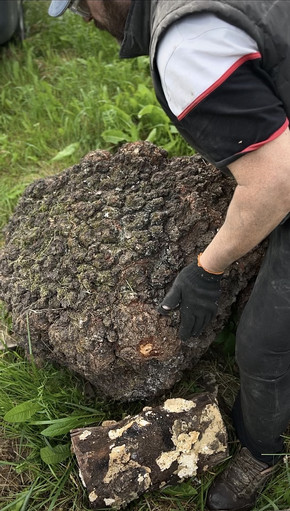

Мастерская расположена в 40 км от Минска. Здесь происходит весь цикл работы: от многомесячной атмосферной подготовки древесного массива до чистовой скульптурной проработки и обжига.
Бесформенный нарост
Сувель не имеет правильной геометрии. Его нельзя просчитать или выстроить по линейке: его текстура формируется годами. Каждый нарост имеет собственную структуру, изгибы и рисунок волокон. Задача мастера — увидеть в этой дикой массе будущую форму.

«Я узнаю в природной форме то, чего буквально в ней нет»
8 часов варки в солевом растворе, затем — многоэтапная ручная обработка и шлифовка. Поверхность становится необычайно гладкой на ощупь, сохраняя при этом природный рисунок материала. Завершающий обжиг огнём создаёт глубокую тёмную фактуру без использования краски.


